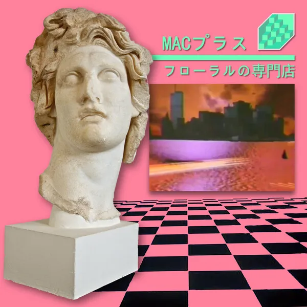

Floral Shoppe
4-/10
"It's not supposed to be taken that seriously"
The cop out no longer works. You can't hide behind the thinly veiled excuse of "this is made ironically, it's not supposed to be taken so seriously."
I hate low effort music. If I can immediately comprehend and dissect the work, then it is for sure derivative and low effort. This is just chopped and screwed music, Lego level plunderphonics. An AI of 2023 would not perform such basic levels of sample flipping.
The only saving graces are the samples themselves, but it's essentially delivering 80s material to a younger audience by packaging itself into a meme, but offering little to no musical transformation in the process.
I also hate hearing about how influential an album is, or how it was one of the firsts to do something. I shouldn't need to take a fucking history class before listening to some frequencies for my brain to chemically react to.
Low effort music will never stand the test of time. People don't still listen to Coltrane, Bill Evans, the Beatles, Jimi Hendrix, because there hasn't been any new Jazz or Rock music since then, but because they're irreplaceable. They were all boundary pushing musicians who paved the scene to become what it is now, they weren't just fucking around on their instruments. The newer additions to the culture don't render their efforts obsolete, if anything, it highlights them. It doesn't matter if Jimi was the first to do what, or this or that. His music still lives on because people hearing his guitar playing and songwriting today still find it interesting.
This is the antithesis to that, where it gets disproportionate amount of attention and praise despite offering nothing substantive of its own, and is now completely overshadowed by its successors. Take one look at the Vaporwave scene today, and you won't find much of this low effort vapor. I actually can't even hear the influences of this project on dozens of Vaporwave projects I encounter nowadays. If I had, I would have never even bothered with the genre.
I will credit this project for one thing, and it is for something completely non-musical: the A E S T H E T I C. It's not much of a compliment to give to a musical project, but I tried. Vaporwave is all loosely tied together under this umbrella of ethereal, dystopian, cyberpunk vibe, and the album art of this project kick started that whole trope as far as I can tell.
This was a bit of an embarrassing start of Vaporwave, the sooner the World forgets about it, the better. The scene is now full of talents like George Clanton, who even has mainstream potential, desert sand feels warm at night, who is able to transport you to an entirely different dimension with his other-worldly sound designs, and death's dynamic shroud who push the boundaries of music with their unorthodox sample meshing. I really can't find a reason for this project to live on.